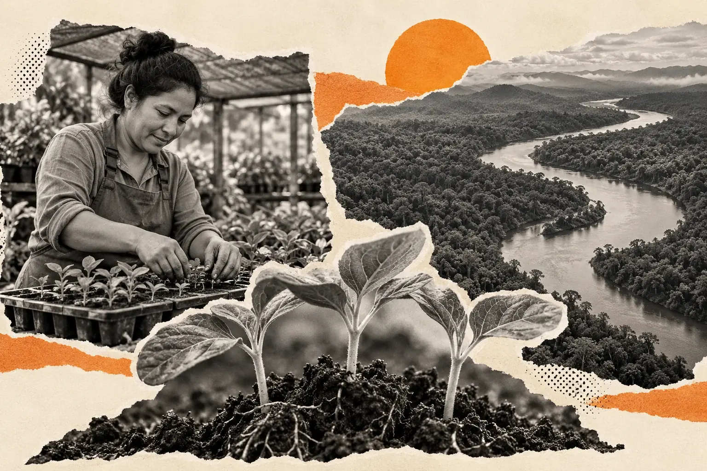

Giving Tuesday and the fight against human trafficking

A person leaving exploitation needs more than the end of an immediate threat. The question of what happens next belongs in any serious conversation about anti-trafficking work. Giving Tuesday can help fund a response, but the appeal should explain what that response involves and whose choices it serves.
This guide explains the terms, the mechanisms of coercion and the evidence donors encounter. It also sets out how to assess an organization without treating an individual’s trauma as proof of its effectiveness. Not For Sale’s invitation is to support our broader mission against exploitation, including the conditions that make a safer livelihood possible.
In this guide 15 sections
What this guide covers
- What human trafficking means and why movement is not required.
- How coercion can operate through work, debt and dependence.
- What global estimates and detected-case figures can tell us.
- How to examine prevention and support work.
- The relationship with environmental harm and livelihoods.
- Practical ways to give, learn and respond responsibly.
What human trafficking means
The international definition concerns acts such as recruiting, transporting, transferring, harboring or receiving a person for exploitation, using means such as force, deception or coercion. For a child under 18, the act and exploitative purpose remain relevant, but those means do not have to be established. A border crossing is not required. 12
This helps explain why trafficking is not limited to kidnapping or movement from one country to another. A person may initially accept an offer and later face conditions they did not agree to or cannot leave. The relevant facts concern the recruitment or other acts, the means used and the exploitation, not whether a journey looks dramatic.
The word should also be used carefully. A poor working condition, a low wage or an environmental violation is not automatically trafficking. Those problems can be serious in their own right. Accurate language helps identify the appropriate response instead of applying one label to every form of harm.
How forced labor relates to trafficking
The International Labour Organization defines forced labor around work or service imposed under threat of a penalty and not offered voluntarily. The penalty can take forms beyond physical violence. What matters is whether the person can genuinely choose and leave the work under the relevant conditions. 13
Human trafficking and forced labor overlap, but they are not identical terms. Trafficking can be a process leading to exploitation, while forced labor describes a condition of work. Modern-day slavery is a broader umbrella term used in public discussion and research. When reading a statistic, check which category it measures rather than treating the terms as interchangeable.
How an offer becomes a means of control
A recruitment process can begin with a promise of work, earnings or a better future. The danger may emerge when the actual conditions differ and the worker’s ability to leave is constrained. ILO guidance describes coercive pressures including withheld wages, debt and restricted access to identity documents. The presence and significance of particular indicators require assessment in context. 14
For donors, the practical implication is that an anti-trafficking response needs to look beyond visible confinement. A person may appear to go to work while facing threats, financial pressure or dependence that makes refusal unsafe. Equally, an observer should not diagnose trafficking from appearance or a single assumption. A fundraising image cannot establish what is happening in someone’s life.
The scale of the problem and the limits of the numbers
The 2022 Global Estimates of Modern Slavery, produced by the ILO, Walk Free and the International Organization for Migration, estimated that 50 million people were living in modern slavery in 2021. That estimate included 27.6 million in forced labor and 22 million in forced marriage. It is a 2021 reference-year estimate published in 2022, not a count of trafficking cases in 2026. 15
A different measure appears in the UNODC Global Report on Trafficking in Persons 2024. The UN’s summary reports that the number of detected victims in 2022 was 25 percent higher than in 2019. Detected cases reflect the people authorities identified and recorded; they do not count everyone experiencing trafficking. 16
These figures answer different questions. An estimate attempts to describe a wider population using a stated method. Detection data describe what entered reporting systems. A change in detections must therefore be interpreted alongside enforcement, identification and reporting conditions. Use the source’s own wording and dates when sharing either measure.
| Figure you encounter | What to retain | What to avoid saying |
|---|---|---|
| Modern slavery estimate | Definition, reference year and producing organizations | That it is a current count of trafficking cases |
| Detected trafficking victims | Reporting period and identification basis | That it represents every person affected |
| People supported by a charity | Organization, timeframe and counting method | That every contact equals a lasting outcome |
| An individual’s account | Consent, context and limits | That one experience represents everyone |
What prevention should explain
“Prevention” is a useful word only when the organization explains what it is trying to change. Ask which risk or condition the work addresses, who participates and how the activity is expected to help. A public information session, a livelihood initiative and a specialist referral service do different things.
An awareness figure alone does not establish that trafficking was prevented. It may show that people attended or received information. A more useful account explains what was taught, who the information was intended for and how the organization checks whether it is relevant. Donors should not demand impossible certainty, but they can ask for a coherent explanation of the work and the evidence available.
This is especially important when an appeal promises an exact number of people will be “saved” by a particular sum. Ask how that calculation was made, which costs it includes and whether it describes an average, an illustration or a guaranteed result. A contribution to a program should not be turned into ownership of another person’s future.
What support after exploitation should explain
Ask what choices people have in the support offered, how their privacy is protected and how the organization describes progress. A useful question is whether the person’s own priorities shape the response, rather than whether their experience fits the campaign’s preferred story.
The organization should make its role clear. Does it provide services directly, fund another organization, make referrals or combine those approaches? Who remains responsible when a need falls outside its remit? These distinctions help a donor understand both the contribution and its limits.
Look for an account that respects the time involved. A campaign calendar is not a recovery timetable. If an appeal uses a personal account, the person should remain more than the event that brought them into contact with the organization. Privacy may mean the public receives less detail than it would like; that can be compatible with responsible reporting.
Why livelihoods belong in the conversation
An anti-trafficking appeal should explain how it understands the conditions around exploitation. If the response ends at an immediate intervention, ask what happens when a person must again find work, housing or another source of support. That question does not prescribe a single solution. It asks whether the organization understands its role within a longer response.
Not For Sale’s published approach includes survivor support, prevention and social innovation, including economic alternatives. The reason to examine that approach is practical: a person’s choices depend partly on the opportunities actually available. Read why give to Not For Sale for our case for support and the reporting behind it. 09
Where environmental harm enters
Environmental harm and trafficking are distinct issues, but some economic activities connect them. INTERPOL describes illegal mining as associated with environmental damage and serious abuses including human trafficking and forced labor. This is evidence of a documented intersection, not grounds for assuming that every mine or environmental offense involves trafficking. 17
There is also a question about livelihoods and displacement. The UN’s summary of the 2024 trafficking report identifies poverty, conflict and climate-related pressures among the contexts that increase vulnerability. That does not mean a climate event determines what will happen to a particular person. It means that the conditions surrounding recruitment and survival deserve attention. 16
The Giving Tuesday ecocide guide examines these connections and the questions donors can ask about environmental work. Supporting the mission as a whole should still have a clearly stated funding purpose; an issue page is not an automatic restriction on the gift.
How to assess an anti-trafficking appeal
Begin with the response. Can you explain what the organization actually does? Then look at the evidence: are dates and definitions attached to results, and is the organization clear about what it cannot establish? Examine the treatment of people in its stories. Does the appeal preserve dignity, or does it depend on graphic detail and a donor-as-rescuer narrative?
Check the giving terms and financial information as you would for any other charity. Be wary of an appeal that treats questions as disloyalty. A serious cause does not remove the need to explain how support is used.
Your decision does not need a perfect comparison of every organization. It does need enough information to connect your gift to a response you understand. The donation guide takes those checks further.
What you can do this Giving Tuesday
If you want to give, choose an organization and read its case for support before using the official donation route. If you want to help others understand, share a sourced explanation and retain the distinctions in the evidence. If you can offer a useful skill, make a defined proposal through the organization’s contact route.
At work, ask how recruitment and labor risks are considered in relevant business decisions. A charitable gift and responsible operational practice address different responsibilities. Neither should be presented as permission to ignore the other.
You do not need to circulate distressing images to make a serious invitation. Explain the issue, the response and why it matters to you. Allow the other person to decide how they wish to act.
If you are concerned about someone now
This is a giving guide, not a reporting service. If someone is in immediate danger, contact local emergency services. For other concerns, use an appropriate specialist service in your location; Not For Sale’s reporting and help directory provides a starting point. Do not investigate or confront a suspected trafficker yourself. 18
Key points to keep
- Trafficking does not require a border crossing.
- Forced labor and trafficking are related but distinct concepts.
- Global estimates and detected cases measure different things.
- A charity should explain prevention and assistance in concrete terms.
- An individual gift cannot guarantee a particular person’s outcome.
- A responsible appeal preserves people’s dignity and agency.